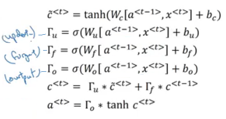

Contents
<ol>
<li><a class="" href="#Sequence-Models">Sequence Models</a></li>
Sequence Models
Sequence models are the machine learning models that input or output sequences of data. Sequential data includes text streams, audio clips, video clips, time-series data and etc. Some examples of sequnce models are: - Recurrent Neural Networks (RNNs) - Gated Recurrent Unit (GRU) - Long Short-Term Memory (LSTM)
There are many types of sequence problems:

Why Sequence Models?
Traditional neural networks have some limitations which makes them inefficient for processing sequential data. For example, a network cannot process an input of variable length. This is because the input of a network must be of the same size. Another limitation is that a network cannot remember information from a long time ago. This is because a network has no memory. Furthermore, traditional NN's don't share features learned across different positions of text/sequence (like CNN's do). In order to solve these problems, we need to use a sequence model.
RNN

Recurrent neural networks address the issue related to memory. They are networks with loops in them, allowing information to persist. In RNN, output at time \(t\) depend not only on the input at time \(t\) but also on the outputs from previous times.
Forward Propagation
There are three weight matrices here: Wax, Waa, and Wya with shapes: - Wax: (NoOfHiddenNeurons, nx) - Waa: (NoOfHiddenNeurons, NoOfHiddenNeurons) - Wya: (ny, NoOfHiddenNeurons)
These matrices are shared across all the time step. The weight matrix Waa is the memory the RNN is trying to maintain from the previous layers.
The equations for forward propagation are: - \(a^{<t>}=g_1(W_{ax}x^{<t>}+W_{aa}a^{<t-1>}+b_a)\) - \(y^{<t>}=g_2(W_{ya}a^{<t>}+b_y)\)
Usually, \(g_1\) is a tanh function and \(g_2\) is a softmax function. \(a^0\) is initialized to zero.

Simplified RNN
We can clean the RNN equations by using some notations. First, we stack \(W_{aa}\) and \(W_{ax}\) horizontally into a single matrix \(W_a\) as: - \(W_a = [W_{aa} W_{ax}]\)
Then, we stack \(x^{<t>}\) and \(a^{<t-1>}\) vertically into a single vector \(a^{<t>}\) as: - \(a^{<t>} = [\frac{a^{<t-1>}}{x^{<t>}}]\)
Then, we can rewrite the equations as: \(\(a^{<t>} = g_1(W_a a^{<t-1>} + b_a)\)\) \(\(y^{<t>} = g_2(W_y a^{<t>} + b_y)\)\)
Backward Propagation (Backpropagation through time!)
In the case of a recurrent neural network, the loss function \(\mathcal{L}\) of all time steps is defined based on the loss at every time step as follows:
$$
\mathcal{L} = \sum_{t=1}^{T_y} \mathcal{L}^{
Backpropagation is done at each point in time. At timestep \(T\), the derivative of the loss \(\mathcal{L}\) with respect to weight matrix \(W\) is expressed as follows:
$$
\frac{\partial \mathcal{L}}{\partial W} = \sum_{t=1}^{T_y} \frac{\partial \mathcal{L}^{
The backpropagation here is called backpropagation through time because we pass activation
afrom one sequence element to another like backwards in time.
Bidirectional RNN (BRNN)
There are many other sequence learning tasks contexts where it’s perfectly fine to condition the prediction at every time step on both the leftward and the rightward context. Consider, for example, part of speech detection. For example, consider the three sentences: - I am . - I am hungry. - I am ___ hungry, and I can eat half a pig.
In the first sentence “happy” seems to be a likely candidate. The words “not” and “very” seem plausible in the second sentence, but “not” seems incompatible with the third sentences.
Due to this reason, we need to use a bidirectional RNN. In a bidirectional RNN, we have two RNNs, one that processes the input sequence from left to right and one that processes the input sequence from right to left. The output of the two RNNs are then concatenated and fed to a softmax layer. For the first RNN layer, the first input is \(x_1\) and the last input is \(x_t\), but for the second RNN layer, the first input is \(x_t\) and the last input is \(x_1\). To produce the output of this bidirectional RNN layer, we simply concatenate together the corresponding outputs of the two underlying unidirectional RNN layers.

Mathematically, we can write the equations as:
$$
\begin{align}
a^{
Problem with RNN
Long-Term Dependencies
Sometimes, we only need to look at recent information to perform the present task. For example, consider a language model trying to predict the next word based on the previous ones. If we are trying to predict the last word in “the clouds are in the sky,” we don’t need any further context – it’s pretty obvious the next word is going to be sky. In such cases, where the gap between the relevant information and the place that it’s needed is small, RNNs can learn to use the past information.

But there are also cases where we need more context. Consider trying to predict the last word in the text “I grew up in France… I speak fluent French.” Recent information suggests that the next word is probably the name of a language, but if we want to narrow down which language, we need the context of France, from further back. It’s entirely possible for the gap between the relevant information and the point where it is needed to become very large.
Unfortunately, as that gap grows, RNNs become unable to learn to connect the information.

Vanishing/Exploding Gradient
The vanishing and exploding gradient phenomena are often encountered in the context of RNNs. The reason why they happen is that it is difficult to capture long term dependencies because of multiplicative gradient that can be exponentially decreasing/increasing with respect to the number of layers. One way to counter the problem of exploding gradient is to use gradient clipping.

Due to all these problems, other architectures have been proposed to overcome these problems. The most popular one is the Long Short-Term Memory (LSTM) network and Gate Recurrent Unit (GRU) network.
GRU

Each layer in GRUs has a new variable \(c\) which is the memory cell. It can tell to whether memorize something or not. In GRU's \(c^{<t>} = a^{<t>}\). In GRU, we have two gates and the cell state. The cell state is kind of like a conveyor belt. It runs straight down the entire chain, with only some minor linear interactions. It’s very easy for information to just flow along it unchanged. Also, as \(c^{<t>} = a^{<t>}\), we no longer have the vanishing gradient problem. See LSTM for details.
Update Gate
The update gate acts similar to the forget and input gate of an LSTM. It decides what information to throw away and what new information to add. The calculation of the update gate is as follows:
$$
\Gamma_u^{
Reset Gate
The Reset Gate is responsible for the short-term memory of the network. This is used to calculate the candidate value of the new cell state. The calculation performed in this gate is very similar to the above:
$$
\Gamma_r^{
Cell State Calculation
Using the above two gates, the candidate cell state is updated as:
$$
\tilde{c}^{
LSTM
Long Short Term Memory networks – usually just called “LSTMs” – are a special kind of RNN, capable of learning long-term dependencies. LSTMs are explicitly designed to avoid the long-term dependency problem. Remembering information for long periods of time is practically their default behavior, not something they struggle to learn!
LSTMs have the same chain like structure like RNN, but the repeating module has a different structure. Instead of having a single neural network layer, there are four, interacting in a very special way.

Cell State
The key to LSTMs is the cell state, the horizontal line running through the top of the diagram.
The cell state is kind of like a conveyor belt. It runs straight down the entire chain, with only some minor linear interactions. It’s very easy for information to just flow along it unchanged.

The LSTM does have the ability to remove or add information to the cell state, carefully regulated by structures called gates.
Gates are a way to optionally let information through. They are composed out of a sigmoid neural net layer and a pointwise multiplication operation. The sigmoid layer outputs numbers between zero and one, describing how much of each component should be let through. A value of zero means “let nothing through,” while a value of one means “let everything through!” An LSTM has three of these gates, to protect and control the cell state.
Gates
LSTM has three gates which decide which information to keep and which to discard.. The first part is called Forget gate, the second part is known as the Input gate and the last one is the Output gate.

Forget Gate
The first gate decides what information we’re going to throw away from the cell state. This decision is made by a sigmoid layer called the “forget gate layer.” It looks at \(h_{t−1}\) and \(x^t\), and outputs a number between 0 and 1 for each number in the cell state \(C_{t−1}\). A 1 represents “completely keep this” while a 0 represents “completely get rid of this.” For example, the cell state might include the gender of the present subject, so that the correct pronouns can be used. When we see a new subject, we want to forget the gender of the old subject.


Input Gate
This gate decides what new information we’re going to store in the cell state. This has two parts. First, a sigmoid layer called the “input gate layer” decides which values we’ll update. Next, a tanh layer creates a vector of new candidate values, \(\tilde{C}_t\), that could be added to the state. For example, we’d want to add the gender of the new subject to the cell state, to replace the old one we’re forgetting.

Output Gate
This cell is responsible for updating the old cell state, \(C_{t−1}\), into the new cell state \(C_t\). We multiply the old state by \(f_t\), forgetting the things we decided to forget earlier. Then we add \(i_t*\tilde{C}_t\). This is the new candidate values, scaled by how much we decided to update each state value. For example, this is where we’d actually drop the information about the old subject’s gender and add the new information, as we decided in the previous steps.

Finally, we need to decide what we’re going to output. This output will be based on our cell state, but will be a filtered version. First, we run a sigmoid layer which decides what parts of the cell state we’re going to output. Then, we put the cell state through tanh (to push the values to be between −1 and 1) and multiply it by the output of the sigmoid gate, so that we only output the parts we decided to.
For the language model example, since it just saw a subject, it might want to output information relevant to a verb, in case that’s what is coming next. For example, it might output whether the subject is singular or plural, so that we know what form a verb should be conjugated into if that’s what follows next.


Variants of LSTM
Peephole Connections

A variant of LSTM is gotten using peephole connections. This means that we let the gate layers look at the cell state. The above diagram adds peepholes to all the gates, but many papers will give some peepholes and not others.
Coupled Input and Forget Gates
Another variation is to use coupled forget and input gates. Instead of separately deciding what to forget and what we should add new information to, we make those decisions together. We only forget when we’re going to input something in its place. We only input new values to the state when we forget something older.

GRU
We studied GRU earlier. GRU is nothing but a special type of LSTM. It combines the forget and input gates into a single “update gate.” It also merges the cell state and hidden state, and makes some other changes.